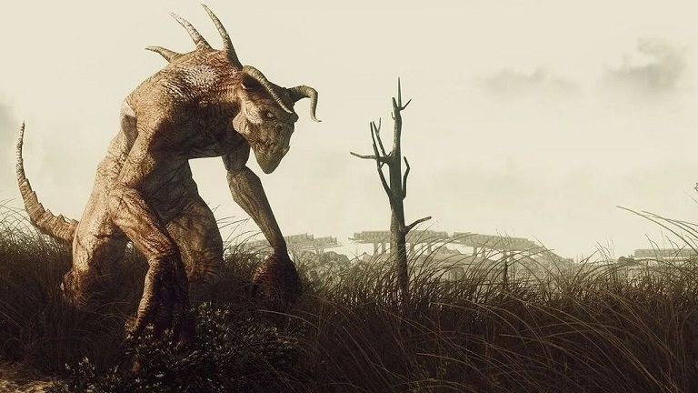
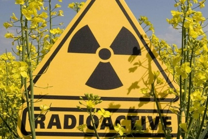

Описание
Атомное оружие очень опасно не только потому, что содержит в себе безудержную разрушительную мощь. На месте взрыва в огромном радиусе распространяется губительная радиация, вызывающая сильные мутации или смерть. Озоновый слой сильно пострадает из-за ядерных ударов по всей Земле, из-за чего сильно повысится температура планеты, а также в атмосферу извне начнут проникать опасные излучения. Радиоактивного заражения избежать не получится никому. Большая часть живых существ вымрет, а оставшаяся сильно пострадает из-за лучевой болезни. Почти все знакомые животные(и, скорее всего, многие люди) превратятся в мутантов, опасных для обычного человека. В том случае, если человечество не окажется уничтоженным(со временем приобретенная устойчивость к лучевой болезни, криосон на несколько сотен лет, либо же долгая жизнь в убежищах и последующий выход из них), людям будет необходимо знать, что делать для того, чтобы выжить.Мутанты

Мутанты - животные и люди, подвергнувшиеся высокой степени облучения, и из-за этого изменившиеся до неузнаваемости.Действия
-Лучше всего будет как можно быстрее найти постоянное укрытие и обосноваться там, укрепить все возможные входы-выходы: забить досками окна, повесить на дверь крепкий замок или установить задвижку.-Место сна старайтесь расположить в самом надежном месте, потому что во сне вы уязвимее всего. Спать лучше по очереди.
-Отличным дополнением к безопасности будет установка импровизированной сигнализации, например, связка звонких металлических предметов, привязанная к чему-нибудь.
-Находясь вне безопасных укрытий и убежищ, будьте максимально тихими, старайтесь не привлекать к себе внимания.
-Желательно передвигаться небольшими группами 2-4 человека, по одному переходя от укрытия к укрытию, избегая открытых мест.
-Заметив мутанта, осторожными движениями перейдите к ближайшему укрытию, где вы сможете укрыться от его взора. Если это возможно - обойдите его, если нет - подождите, пока он уйдет.
-Стычки с новыми животными лучше стараться избегать, но если это неизбежно, то желательно иметь при себе оружие или быстрые ноги.
-Если мутант больше или схож по размерам с человеком, то он, как правило, сильнее его. От таких видов лучше убегать без оглядки и стараться спрятаться и забаррикадироваться.
-Мелкие мутанты скорее всего испугаются человека, но некоторые могут попробовать напасть. Не имея при себе никакого оружия, лучше убегайте.
-В случае, если у вас есть оружие, необходимо обезопасить себя от укусов или порезов.Надевайте одежду из плотного, крепкого материала. Кожаный плащ или толстая куртка хорошо подойдут, но лучше обмотать руки и ноги чем-то твердым, чтобы принимать укусы и удары этими местами, например - деревянными досками.
-Старайтесь всегда передвигаться днём, потому что ночью животные, как правило, видят куда лучше человека, и зазевавшийся путник легко может стать добычей.
Радиация

Действия
-Желательно иметь при себе дозиметр любого рода, и немедленно покидать зону, в которой он начинает подавать сигналы.-Солнечные лучи при слабом озоновом слое очень опасны для человеческой кожи, поэтому лучше носить одежду, полностью скрывающую тело, а также маску и капюшон.
-Если вы не имеете при себе дозиметра, и не можете быть уверены в безопасности зоны, в которой находитесь, наденьте противогаз, если он есть.
-Каждый раз после выхода на улицу дезинфицируйте одежду и принимайте душ, тщательно мойте всё тело.
-Всегда храните отдельно домашнюю одежду и одежду для выхода на улицу.
-Не употребляйте в пищу ничего из зон с повышенным радиационным фоном, а также не контактируйте с металлическими предметами оттуда.